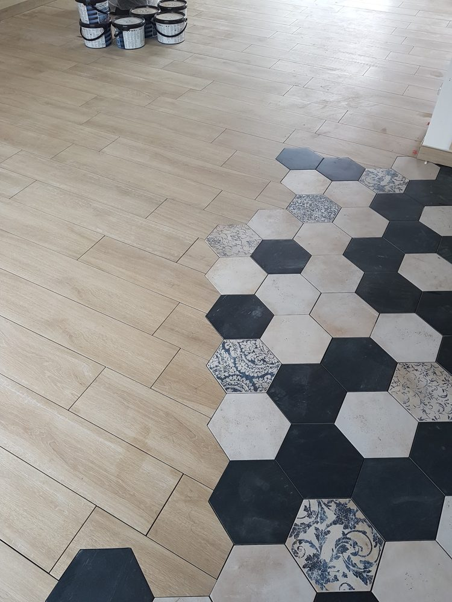
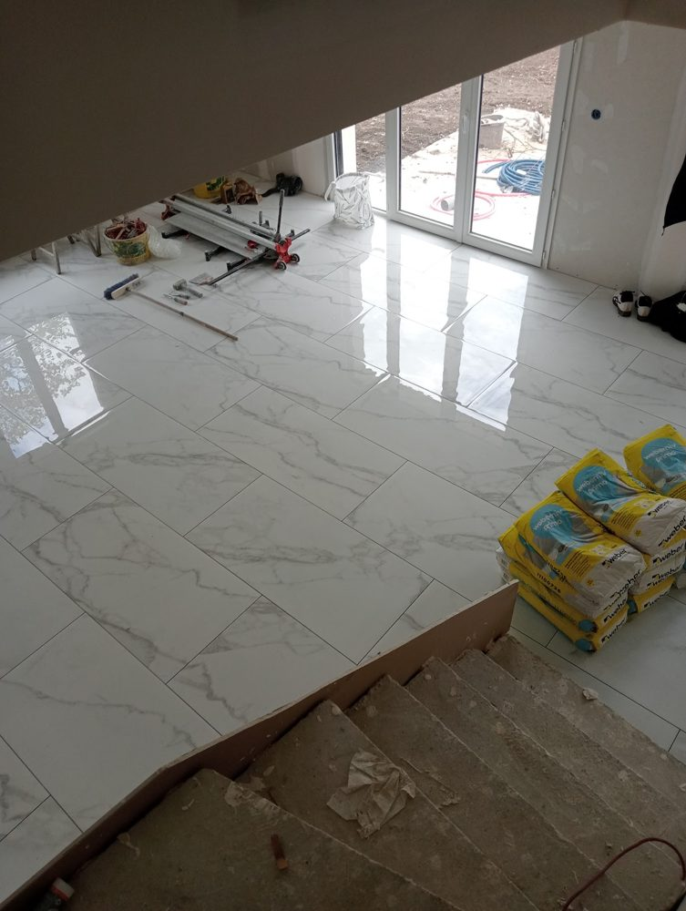
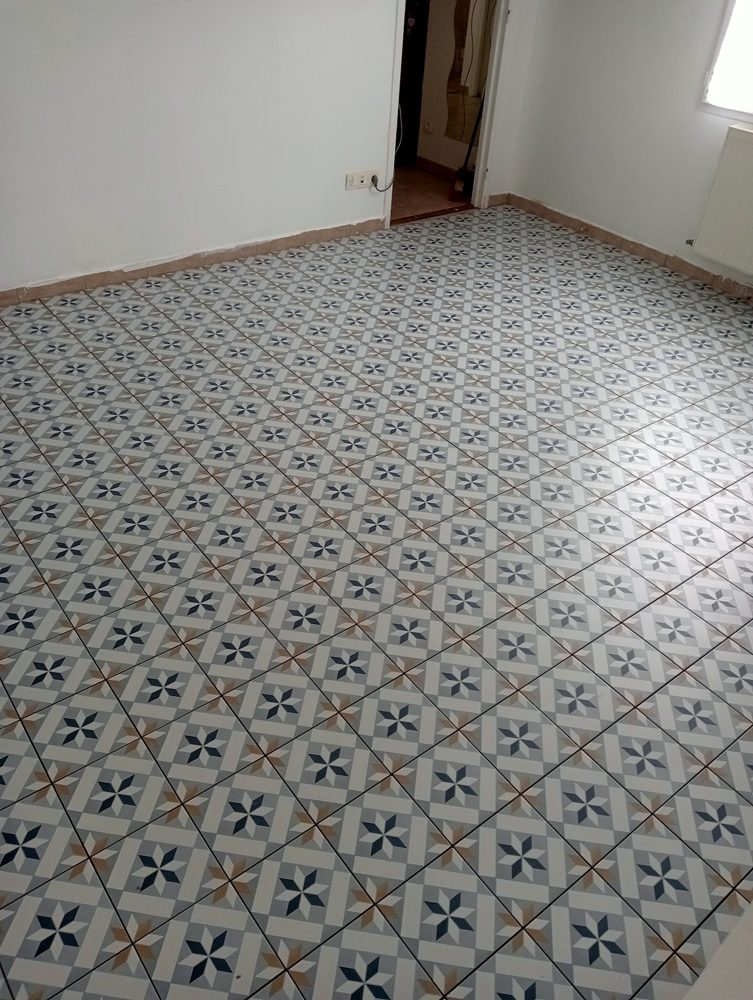
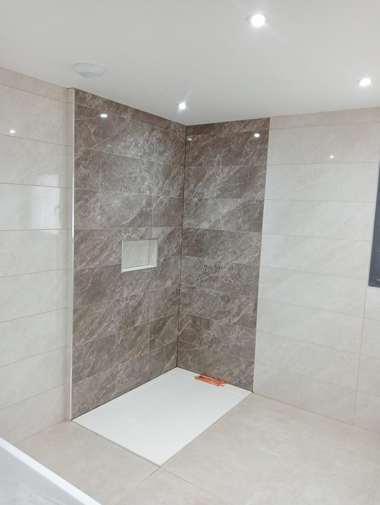
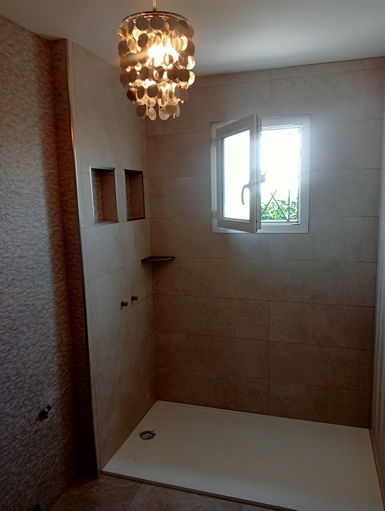
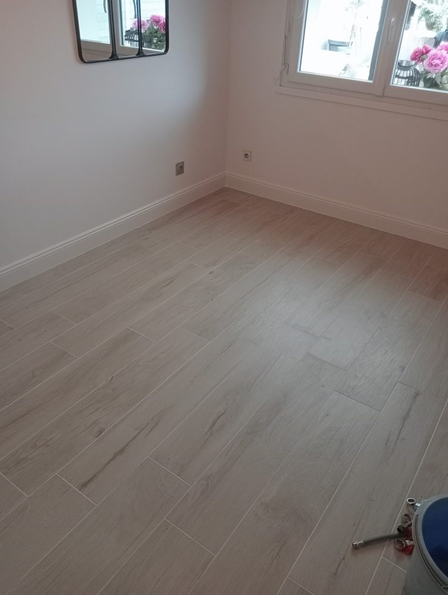
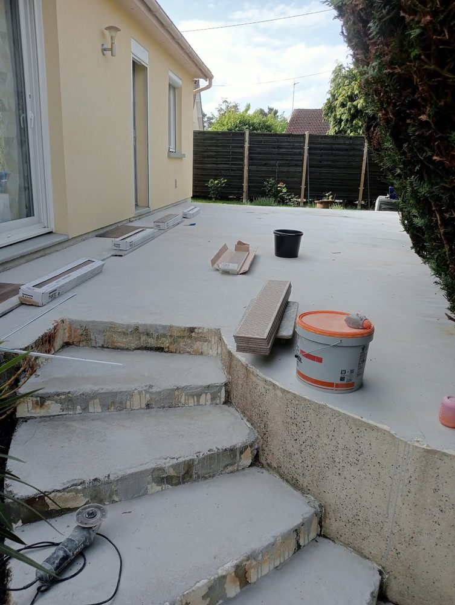

Youssef pose vos carrelages de sol et de mur avec des découpes précises et un chantier propre. Grands formats, carreaux de ciment, douches à l'italienne, rénovation sur l'ancien carrelage : un travail soigné, organisé selon vos contraintes.
Les chantiers réalisés pour nos clients (photos ci-dessous).
Grands formats, imitation parquet, effet marbre, carreaux de ciment : pièces de vie et entrées.
Faïence murale, douches à l'italienne, niches carrelées.
Nouveau carrelage posé sur l'ancien avec primaire d'accroche, y compris en faible épaisseur sous une porte-fenêtre.
Ponçage, ragréage et mise à niveau avant pose de carrelage ou de parquet.
Préparation et carrelage de marches et d'escaliers.
L'arti carrelage, c'est Youssef, carreleur à Chartres. Ses clients le disent dans leurs avis Google : découpes très précises, souci du détail, bons conseils pour la finition, et des journées de travail organisées en fonction de leur présence.
« Un travail soigné et de grande qualité. »
« Sa découpe est super précise, rien à dire. »
« Disponible, engagé, à l'écoute et partage également ses conseils. »
4,9/5 sur 35 avis Google. Quelques avis publiés sur notre fiche Google.
« Nous avons fait appel à Youssef pour la pose d'un carrelage par dessus l'existant, le peu de marge par rapport à une porte fenêtre en particulier a imposé du 6mm et donc plus délicat en pose. Ponçage, primaire, mise en place, soucis du détail, bref un travail soigné et de grande qualité. De plus Youssef a organisé ses journées de travail en fonction de notre présence et des besoins de circulation entre les différentes pièces. Venu aux dates prévues, ponctuel, revenu comme convenu suite à mon calcul un peu juste, homme de parole, le tout pour un tarif compétitif. Franchement TOP et très fortement recommandé. »
Olivier M. · avis Google · avril 2026« Prestation de qualité et rapide, un travail propre et un rendu au delà de nos attentes avec des conseils qui ont permis une finition au top ! On recommande »
Marion F · avis Google · mars 2026« Youssef est venu régler un problème de menuiseries trop basse en ponçant le ragréage pour que je puisse installer mon parquet, grâce a son expertise et son équipement adapté. »
Marie-Aline M. · avis Google · janvier 2026« ⭐⭐⭐⭐⭐ Un travail exceptionnel !
J'ai fait appel à Youssef pour la pose de carrelage dans ma maison en rénovation, et le résultat est tout simplement magnifique ! Il a installé le nouveau carrelage sur l'ancien avec un primaire d'accroche, et le rendu est parfait. Son travail est soigné, précis et rapide, avec une grande attention aux détails.
En plus d'être un excellent professionnel, Youssef propose des tarifs très compétitifs, ce qui est rare pour une telle qualité de prestation. Je recommande vivement ses services à tous ceux qui recherchent un carreleur de confiance.
(Je joins deux photos avant/après pour montrer le superbe résultat !) »
« Carreleur au top ! Nous avons travaillé avec lui pour la pose de carrelage dans deux salles de bain et toute la pièce de vie.
Il fait un travail soigné, attention aux détails, sa découpe est super précise, rien à dire.
Il est disponible, engagé, à l’écoute et partage également ses conseils en cas de besoin.
Nous le remercions chaleureusement pour sa prestation et service de haute qualité. »







Chartres et ses environs (Eure-et-Loir).
Horaires : lundi au vendredi 8 h – 17 h, samedi 9 h – 17 h
Décrivez votre projet, nous vous rappelons rapidement.